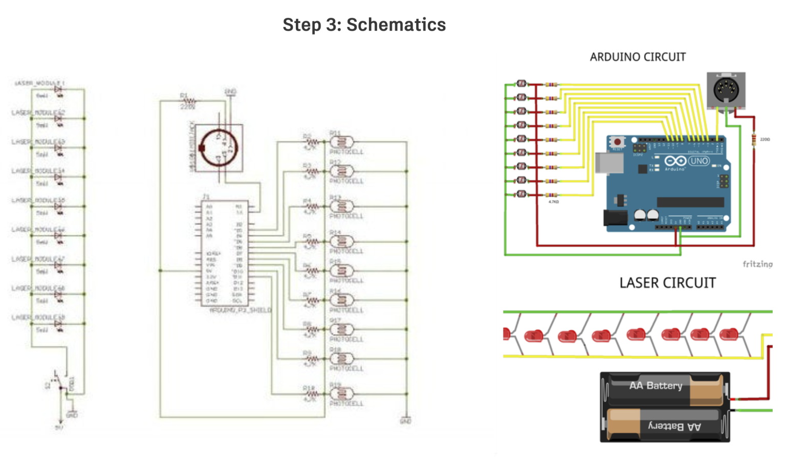
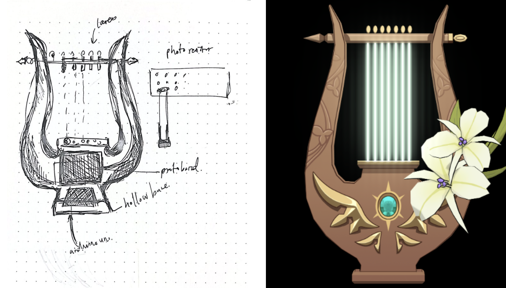
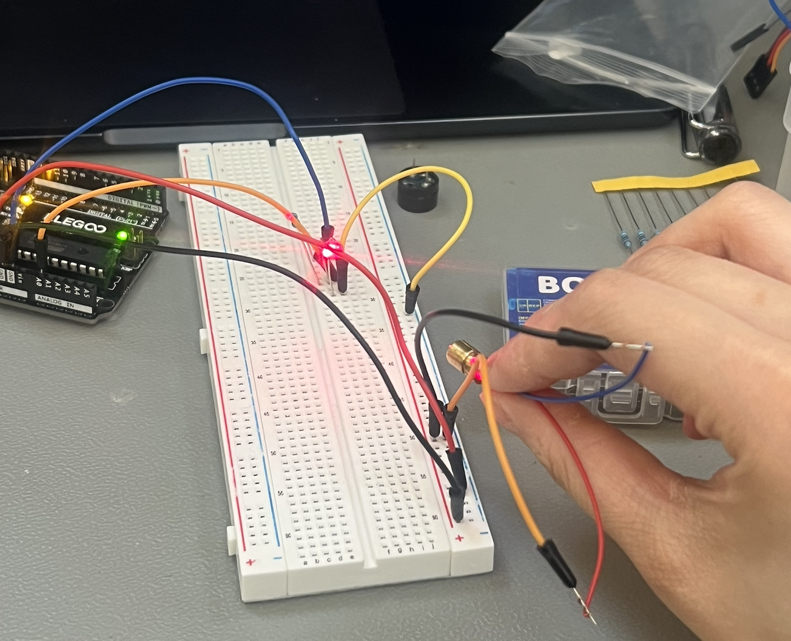
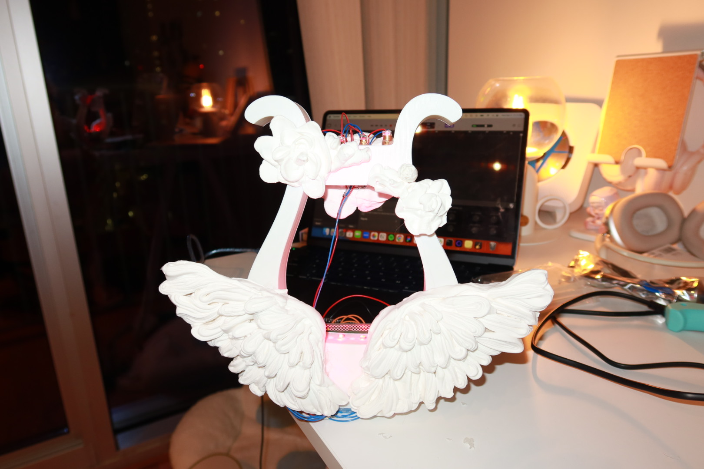

Reference & circuitry
This Instructables Arduino laser harp (opens in new tab) helped me connect the dots on circuitry; my parts and schematic ended up quite different, but the underlying logic matched what I needed.


“what fictional worlds can i design for”
“the film or novel world? harry potter?”
“the game world? genshin impact?”
I built an instrument where the strings are made of light. Where the physical and the fictional finally touch.
This project is probably one of the coolest artifacts I have ever made by far. I came across the concept of a laser harp while surfing online, and, while it wasn’t the most common creation, the creator I was looking at had confirmed in the comments that she used a MIDI connection and Arduino, so I knew it could be done. I wanted to create this musical instrument for myself. See the creator’s laser harp reel on Instagram (opens in new tab).
ARDUINO
3D MODEL IN FUSION
CONNECT THROUGH MIDI

The concept was simple: lasers would act as invisible strings, beaming down on photoresistors, which would read light levels.
When the player blocks a beam, the value drops, and that change has to reach the music software on my computer somehow. I read a lot of threads and build logs to sanity-check the idea.
Swipe or scroll sideways for more

This Instructables Arduino laser harp (opens in new tab) helped me connect the dots on circuitry; my parts and schematic ended up quite different, but the underlying logic matched what I needed.

I knew the project would pull in printing, soldering, firmware, and software bridges, so I started early. Chase and Professor Nitsche helped me get lasers and photoresistors in hand; I tested them on a breadboard until the readings looked stable. Once those behaved, I let myself believe the rest of the build was actually possible.
The build unfolded in four passes: form, software bridge, electronics, and finish.
The finished lyre on its cloud base, plus a short demo of it in action.

I think this project really just showed me that with the help of people who have mastered so many different disciplines, you can really create something cool. So many ECE students would come up to me at HIVE, wonder what I’m making and offer their help, which was pretty awesome. I’m a lot more comfortable soldering and I’ve picked up a lot of techniques for it and I’ll probably be using Fusion in the near future, but there’s still more to learn.